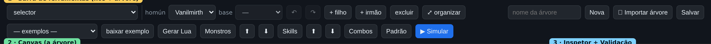

Primeiros passos
As duas telas da versão estática, como circular entre elas e — o mais importante — como você guarda e recupera o seu trabalho.
As duas telas
O BR-AI estático tem duas páginas, e você alterna entre elas pelo link no canto superior:
- Editor — a página inicial (
index.html). É onde você monta a árvore arrastando blocos. Veja o Guia do Editor. - Simulador — a página
sim.html. É onde você testa a árvore num mundo de mentira: mapa, controle de tempo e painéis de depuração. Veja o Guia do Simulador.
No topo de cada tela há os links de navegação: “Editor de árvores →” (no simulador) e “← Simulador” (no editor), além do link “❔ Documentação”, que abre esta ajuda em uma nova aba.
Toda a IA roda dentro da própria página — o motor de árvore em Lua é interpretado no navegador. Você não precisa de Node, Electron, terminal nem instalar dependências. Use um navegador atual (Chrome, Edge ou Firefox).
Onde fica o seu trabalho: carregar = upload, salvar = download
Esta é a diferença mais importante da versão estática. Para manter sua privacidade e não acumular dados no navegador, os seus cenários e árvores não ficam guardados na página. O modelo é simples:
- Carregar uma árvore ou um cenário = enviar um arquivo do seu computador (upload).
- Salvar uma árvore ou um cenário = baixar um arquivo
.json(download), que você guarda onde quiser.
Ou seja: o que você produz vira um arquivo no seu computador. Para retomar depois, basta enviar esse arquivo de volta. Nada é perdido — mas nada fica preso ao navegador.
Como o conteúdo não é gravado no navegador, recarregar ou fechar a página descarta a árvore/cenário que estiverem só na tela. Clique em Salvar (árvore) ou 💾 salvar cenário para baixar o arquivo antes de sair.
Importar uma árvore (no Editor)
No Editor, use 📤 Importar árvore (fica junto dos controles de árvore, na barra de ferramentas). Escolha um arquivo .json de árvore que você baixou antes. Se o arquivo não for uma árvore válida, o editor avisa e não carrega nada.

Importar um cenário (no Simulador)
No Simulador, use 📤 Importar cenário (fica junto dos controles de cenário). Escolha um arquivo .json de cenário. Ele é validado e carregado direto no mapa.
Exemplos prontos
Para você não começar do zero, a versão estática traz exemplos de árvores (no editor) e de cenários (no simulador). Basta escolher um exemplo no seletor “— carregar exemplo —” e ele é carregado na hora. Se quiser guardar o arquivo do exemplo no seu computador, use o botão baixar exemplo ao lado.
Cadastros que ficam no navegador (monstros e skills)
Diferente de cenários e árvores, alguns cadastros de configuração — o catálogo de monstros/grupos, a escolha de skills por homúnculo e as invocações — vêm preenchidos com valores padrão e são lembrados pelo navegador entre sessões, porque são preferências da ferramenta, não o seu conteúdo. Você ainda pode exportar (⬇, baixa um .json) e importar (⬆) esses cadastros para levar de um computador a outro. Depois de importar um cadastro, recarregue a página para aplicá-lo.
O laço editor ↔ simulador
O caminho mais rápido para iterar não passa por arquivos. No Editor, o botão ▶ Simular envia a árvore atual (com o tipo de homúnculo) direto para o Simulador e abre a tela dele. Ajuste, volte ao editor, mude algo, simule de novo.
- No Editor, monte a árvore e clique ▶ Simular.
- No Simulador, pinte o cenário e rode os ticks; observe a árvore colorida.
- Achou um problema? Volte pelo link “Editor de árvores →”, corrija, e clique ▶ Simular de novo.
- Quando estiver bom, baixe a árvore (Salvar) e gere o pacote (Gerar Lua).
Sempre que reproduzir um comportamento errado, salve aquele cenário (download). Ele vira um caso de regressão: você reabre o mesmo mundo depois para confirmar que a correção funcionou.
Pronto para construir? Siga para o Guia do Editor ou, se quiser entender o todo antes, leia Conceitos.